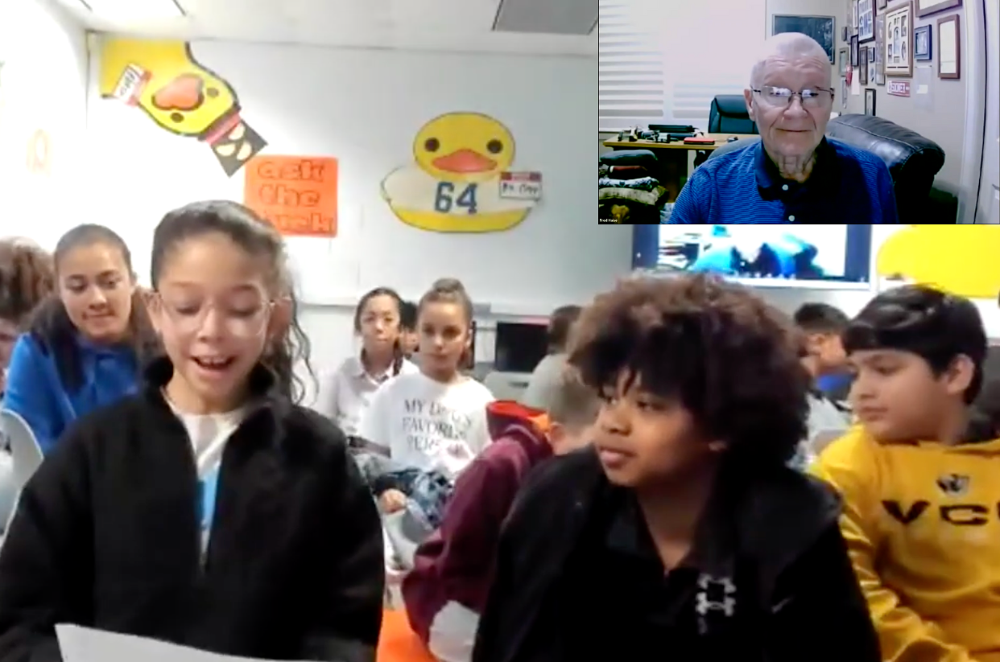

Astronaut Q&A - Apollo 13: A Successful Failure
Our students had a virtual Q&A session with Apollo 13 astronaut, Fred Haise, hosted by STEAM4Space!
Student Questions
General Questions
- How was the food up in space?
- What did you eat when you were coming back to earth?
- Which planet would you like to visit?
- How was the view of the moon/earth when you were in space?
- When you were a test pilot, what were the requirements when you inspected the plane before you flew?
- What question do you wish people would ask you, but rarely do?
Apollo 13 Questions
- What did you bring onboard the space capsule?
- What was your scariest moment on the spaceship?
- Did the astronauts have to control the ship?
- What were you thinking when you figured out you had a problem?
- Before you decided on the plan that you used to get back to Earth, did you, or any of the other astronauts with you consider any other ideas that would not have worked out, and if yes, then what were they?
- After all this time, what do you think about the mission today?
- Were there disagreements, and if so, how were they resolved?
- What was the best thing about the mission?